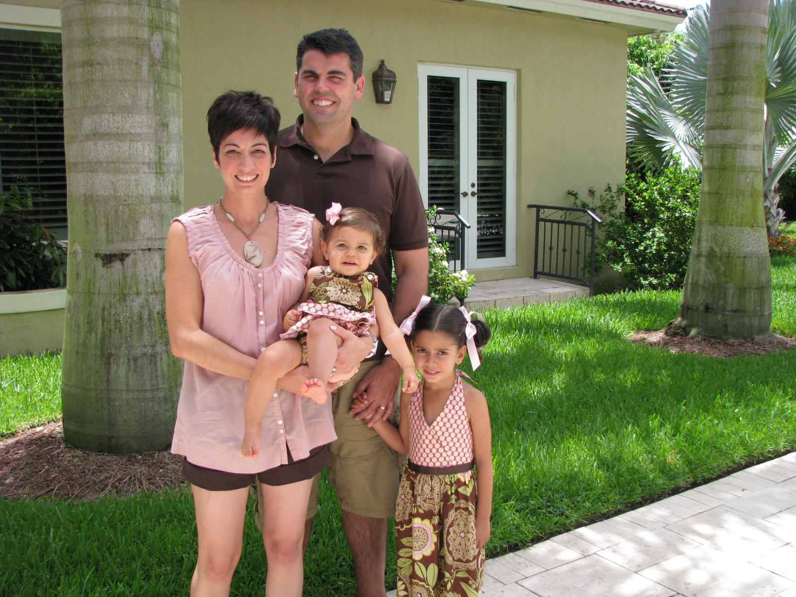
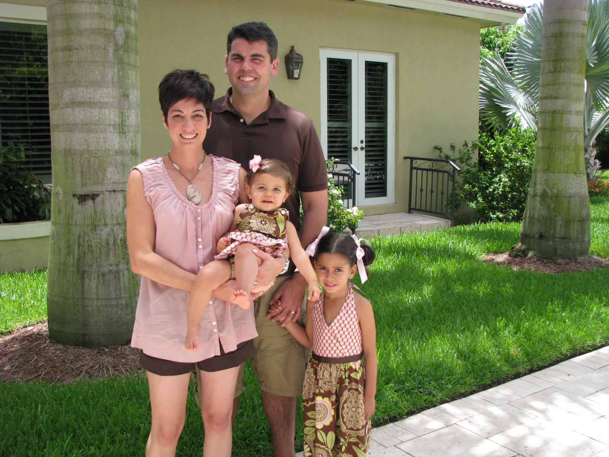
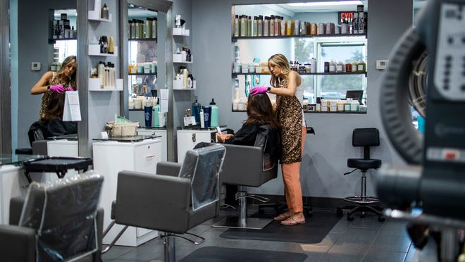
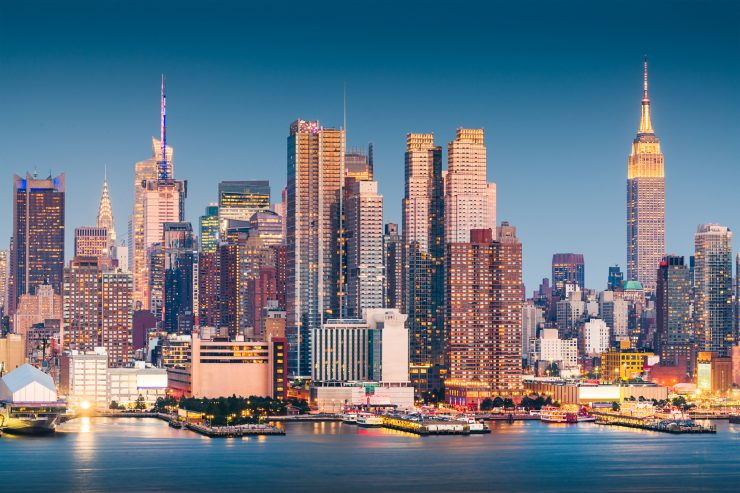

About Me
 
 
My name is Sydney Salgado. I am 17 years old. I live in Greenville, SC. I moved to SC in 2007. I originally lived in Miami, Florida. Almost all of my family still lives in Miami. I have one younger sister named Camila and I also have a dog named Dakota. I like riding horses, its pretty fun and relaxing. I don't like chocolate and people always ask me why and I don't know what to tell them, I just don't like it.
Where do I See Myself in 5 Years
In five years, I see myself working as a makeup artist and/or a hairstylist. I know that everyone thinks that not a real career, but its what I love and what makes me happy. Who knows in five years I may be successful and be working in hollywood or NY. No one truly knows where they will be in the future.

Where do I See Myself in 10 Years
In 10 years I hope to be living on my own somewhere not in SC. Maybe in NYC, California, or back in Miami. I would like to be living in a big city. I love all the people rushing to get places and everything is fast paced. I like when things get done as soon as possible. In Greenville everyone takes their time and always feel the need to talk to everybody. I just want to go places get what I need and not be bothered. So in 10 years, I hope to be in a place that is like that.
